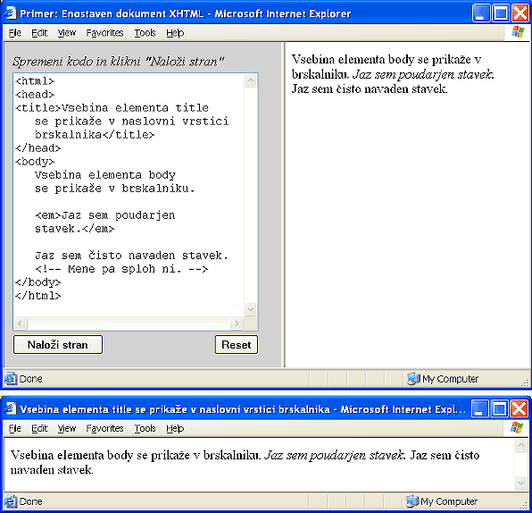

Čeprav nismo o jeziku XHTML še ničesar povedali - ali pa morda ravno zato - si kar takoj oglejmo zgled enostavnega spletnega dokumenta. Kratek pogled na primer nam bo razkril precej o tem, kakšen je jezik XHTML in kaj lahko z njim počnemo.
V urejevalnem polju na levi strani vidimo tako imenovano izvorno kodo (angl. source code) dokumenta. To je besedilo, ki ni namenjeno neposrednemu branju, ampak branju prek brskalnika. Če ta dokument naložimo v brskalnik, dobimo besedilo, kot ga vidimo na desni strani. Prva stvar, ki jo začudeni opazimo, brž ko naložimo stran v brskalnik, je, da se v oknu pokaže zelo malo tistega besedila, ki ga vidimo v izvornem dokumentu. Besedilo, ki ga ne vidimo, v glavnem služi kot navodilo brskalniku, na kakšen način naj prikaže posamezne dele dokumenta. To je tudi vse, kar jezik XHTML zna. Z njim ne moremo pisati programov, ker to ni programski jezik. XHTML je označevalni jezik (angl. markup language). Z njim lahko označujemo posamezne dele besedila, za katere želimo, da se prikažejo na poseben način: kot pomembno ali poudarjeno besedilo, kot naslov ali podnaslov, kot levo, desno ali središčno uravnano besedilo, besedilo urejeno v tabelo, itd.
Če mi poveš, bom pozabil,
če mi pokažeš, si bom zapomnil,
če dovoliš, da poizkusim, bom razumel.
(kitajski pregovor)
Najbolj pomembno od vsega je, da primere v tem učbeniku tudi preizkusite, jih spreminjate in opazujete učinek. Zaradi udobja se vsi zgledi nahajajo kar v urejevalnem polju, njihov rezultat pa lahko opazujete v istem oknu brskalnika na desni, če pritisnete gumb "Naloži stran", ki se nahaja pod urejevalnim poljem. Primere lahko spreminjate in učinek vsakokratne spremembe opazujete z vnovičnim klikom na gumb "Naloži stran". Če ste se izgubili, enostavno pritisnite gumb "Reset" in primer se bo povrnil v prvotno obliko. To je zelo praktično, če želite na hitro preizkusiti, ali razumete določene pojme, ki jih primer obravnava. Za resnejše delo, kjer boste želeli svoje izdelke tudi shraniti, boste izvorno kodo shranili v datoteko s končnico html ali htm. To lahko storite s poljubnim urejevalnikom besedila, ki omogoča shranjevanje navadnega besedila (angl. text). Ko datoteko odpremo s poljubnim brskalnikom, se v njem pokaže oblikovano besedilo.
Za vajo gornji zgled najprej prekopirajte v datoteko primer.html in to datoteko odprite z brskalnikom. V brskalnikovi vrstici s spletnim naslovom boste namesto običajnega "http://.../primer.html" videli nekaj takega kot "c:\...\primer.html". To je zato, ker strani niste odprli prek spletnega strežnika. Če boste hoteli, da bodo vaše strani vidne tudi na drugih računalnikih na spletu, boste morali na svojem računalniku namestiti in zagnati spletni strežnik, ali pa datoteke prenesti na kak drug računalnik, kjer spletni strežnik že teče. Žal se v tem učbeniku z objavljenjem spletnih strani ne bomo ukvarjali, posvetili se bomo le njihovi izdelavi, za kar strežnika ne potrebujemo. Niti ni potrebno, da smo priklopljeni na Internet.
Pomudimo se še malo pri našem prvem primeru. Že prej smo opazili, da se v oknu brskalnika ne pokaže vse besedilo iz izvorne datoteke. Če pogledamo podrobneje, bomo videli, da manjka vse tisto, kar je obdano s pari znakov manjši (<) in večji (>). Vsakemu paru takšnih znakov, skupaj z besedilom, ki stoji vmes, rečemo značka (angl. tag). Primer takšne značke je <em>.
Naslednje, kar zbudi našo pozornost, je dejstvo, da značke nastopajo v parih. Prvi od para značk, tisti brez poševnice, pravimo začetna značka (angl. start tag), drugi znački, tisti s poševnico, pravimo končna značka (angl. end tag). Takemu paru značk pravimo element, besedilu med značkama pa vsebina elementa. Da ne bi pozabili na končno značko, je v praksi priporočljivo, da element najprej zaključimo s končno značko in se šele potem lotimo njegove vsebine.
Element je osnovni gradnik vsakega dokumenta XHTML in določa, na kakšen način naj se prikaže njegova vsebina. Element em na primer pove brskalniku, naj njegovo vsebino, to je stavek "Jaz sem nadvse pomemben stavek." prikaže poudarjeno. Večina popularnih brskalnikov prikaže poudarjeno besedilo v ležečem tisku.
Imen elementov si ni težko zapomniti, saj so to polne ali okrajšane angleške besede. Tako je na primer em okrajšava za emphasis (slov. poudarek).
V izvorni kodi našega primera je še en stavek, ki ga v oknu brskalnika ni videti. To je posledica dejstva, da stavek leži med skupinama znakov <!-- in --> Vse, kar postavimo med ti dve skupini znakov, brskalnik obravnava kot opombe, ki ostanejo očem gledalca spletne strani skrite. Opombe služijo avtorju, da si vanje zapiše najrazličnejše prebliske v zvezi s spletno stranjo, ki jo dokument predstavlja. Takšni zapiski lahko avtorju pomagajo pri vzdrževanju spletne strani. Čeprav opombe na spletni strani niso vidne, pa jih vsakdo lahko vidi, če pogleda izvorno kodo spletne strani. Zato bodite pri pisanju previdni, da koga ne užalite ali ne izdate kakšne pomembne osebne, poslovne ali državne skrivnosti.
Kot nam kaže primer, je celoten spletni dokument vsebovan v elementu html (par značk <html> in </html>). Element html vsebuje nadalje elementa head (slov. glava) in body (slov. telo). Dejanska vsebina dokumenta, tista, ki se prikaže v oknu brskalnika, se nahaja v elementu body. V elementu head se nahajajo razne pomožne informacije, kot je na primer naslov dokumenta, podan z elementom title (slov. naslov). Omenjeni štirje elementi: html, head, title in body, so vsi obvezni in tvorijo najmanjši dokument XHTML.
Naslov, ki ga podamo z elementom title, večina brskalnikov prikaže v naslovni vrstici čisto na vrhu okna. Če opazujemo primere v našem učbeniku, tega naslova ne bomo videli, ker se primeri nalagajo v posebnem okviru. Če hočemo videti naslov, moramo shraniti primer v datoteko s podaljškom html ali htm in jo odpreti v svojem oknu brskalnika, kot to vidimo na sliki 1.
|  |
| Slika1: Primer dokumenta znotraj učbenika (zgoraj): Levo vidimo v urejevalnem polju izvorno kodo dokumenta, medtem ko se na desni strani kaže njegov izgled, kakor ga prikaže brskalnik. Primer dokumenta v svojem oknu brsalnika (spodaj): če odpremo dokument v svojem oknu brskalnika, se vsebina elementa title pokaže v naslovni vrstici čisto na vrhu okna. |
Zdaj že vemo, da se vsak element začne z začetno značko in zaključi s končno značko. V našem prvem primeru smo opazili tudi, da se lahko začne nov element, še preden se star element zaključi. Na ta način lahko postane en element del vsebine drugega elementa. Takemu vstavljanju elementov enega v drugega pravimo gnezdenje. Katere elemente lahko gnezdimo in kdaj, bomo spoznavali sproti, tu bomo omenili le splošno pravilo, ki se ga moramo pri gnezdenju vedno držati: Nikoli ne smemo zaključiti elementa, če še nismo zaključili vseh elementov, ki jih ta element vsebuje.
Za primer si oglejmo dva primera pravilnega gnezdenja elementov:
<!-- 1. primer: -->
<head><title></title></head>
<!-- 2. primer: -->
<body>
Zdaj smo v elementu body.
<em>Zdaj smo v elementu em, ki je v elementu body</em>
Zdaj smo spet nazaj v elementu body.
</body>
In še primer nepravilnega gnezdenja elementov:
<body><em></body> to ni kul, ker še nismo zaključili elementa em </em>
Jezik XHTML je občutljiv na velike in male črke (angl. case sensitive). V resnici morajo biti vse značke zapisane z malimi črkami.
Jezik XHTML je označevalni jezik, kar pomeni, da z njim ne pišemo programov, ampak označujemo, na kakšen način naj se prikaže določena vsebina. Osnovni gradnik dokumenta XHTML je element, ki ga omejujeta začetna in končna značka. Med obema značkama stoji vsebina, ki ji element določa obliko. Najmanjši pravilen dokument XHTML mora vsebovati naslednje elemente: html, head, title in body.
V izvorni kodi dokumenta so lahko tudi opombe, ki se v brskalniku ne pokažejo.
Elementi lahko vsebujejo tudi druge elemente, čemur pravimo gnezdenje. Pri gnezdenju moramo paziti, da nikoli ne zaključimo elementa, če še nismo zaključili vseh elementov, ki jih ta element vsebuje.
Jezik XHTML je občutljiv na velike in male črke.